Guía técnica — cómo funciona y cómo resolver un problema
Emisiones exitosas de los últimos 30 días, medido sobre la base de producción:
| Cliente | CUIT | Últimos 30 días | Tableros |
|---|---|---|---|
| Polifroni Puertas | 30637662755 |
134 · 63% | Fact Local · Facturación obra |
| eGrowers (Sofía Alewarts) | 27333439692 |
49 · 23% | Facturación |
| The Automation Partner SA | 30719434505 | 29 · 14% | Facturación TAP SA |
| Martin Meliendrez (dev) | 20327446348 | 2 · 1% | Facturación |
| Pamela Martinez | 23329811484 | 0 | Facturación |
18410634614) — es el tablero que se copia
cuando alguien instala la app. No debería usarse para facturar. Tiene emisiones
viejas de cuando se lo usó para probar.Si algo falla, son los que van a escribir.
Polifroni está en otra cuenta de monday (30446835), así que no se
ve desde la cuenta de ustedes. Y tiene dos tableros que facturan contra la misma
numeración de AFIP: que un número "falte" en uno no significa nada, puede estar en el
otro.
Un solo servidor con dos copias de la app. Cada una con su base de datos y su entorno de AFIP.
Staging apunta al AFIP de homologación, pero solo procesa localmente los tableros de tres workspaces de desarrollo. Hoy, en la práctica, son estos dos:
| Tablero | Qué pasa si emite estando en staging |
|---|---|
Tablero de pruebas18425062980 |
✅ va a homologación. Y además tiene certificado de homologación, así que no puede emitir nada real ni queriendo |
Plantilla ES18410634614 |
va a homologación, pero no se usa para facturar |
Cualquier otro tablero —incluido el de facturación de Martín— NO va a homologación: se reenvía a producción y emite un CAE real. Es a propósito: si un cliente cae ahí por error, su factura sale igual en vez de perderse.
Para probar, usá siempre el tablero de pruebas. Es el único donde no se puede romper nada.
1. monday dispara la receta → POST /api/invoices/emit
2. lee el ítem y sus subítems (concepto, cantidad, precio, IVA)
3. valida los datos ← acá falla el 80% de los errores
4. consulta el padrón de AFIP (¿quién es este CUIT? ¿qué IVA tiene?)
5. decide la letra: A, B o C
6. RESERVA el número en la base ← ANTES de hablar con AFIP
7. le pide el CAE a AFIP
8. verifica que el CAE sea el correcto
9. genera el PDF y lo sube al ítem
10. registra en el tablero de auditoríaEl paso 10 escribe en Comp Emitidos, que es el registro de todas las emisiones de todos los clientes. Es el mejor lugar para ver de un vistazo qué pasó en el día.
El número se anota antes de hablar con AFIP. Si AFIP responde y justo se corta la red, el número quedó guardado y el sistema puede preguntar más tarde "¿esto se emitió?". Sin eso, el comprobante quedaría existiendo en AFIP sin que lo sepamos.
Es lo que hace que la mayoría de los problemas no requieran que nadie haga nada:
| Capa | Cuándo actúa | Qué hace |
|---|---|---|
| 1. Reserva | antes de cada emisión | anota el número antes de hablar con AFIP |
| 2. Verificación | justo después del CAE | le vuelve a preguntar a AFIP si coincide |
| 3. Reconciliación | cada 5 minutos | rescata las emisiones que quedaron colgadas |
| 4. Auditoría | 3 AM, todos los días | compara todo contra AFIP y avisa a Slack |
Hay una quinta, al revés: el detector de huérfanos corre pegado a la de las 3 AM y busca comprobantes que AFIP tiene y nosotros no.
Ante una emisión que "parece trabada", esperá 15 minutos. La capa 3 ya está trabajando en eso.
Deployar a develop sube el código a staging, pero eso solo no alcanza:
monday sigue mandando todo a producción. Hay que decirle a monday que apunte a staging, y
eso se hace con una versión Draft en el Centro de Desarrollo.
Solo cuando estás probando un cambio o resolviendo un error y querés verlo funcionar antes de que lo vean los clientes. Se crea la Draft, se prueba, y cuando el arreglo está listo se pasa a producción y se borra la Draft.
No es algo que quede puesto: mientras la Draft exista, todos los tableros de la cuenta de TAP apuntan a staging, no solo el tuyo.
the-automation-partner.monday.com/apps/manage → Mis apps → abrí
"Factura ARCA: Factura Electrónica Argentina" (la primera de la lista, con estado
Mercado).
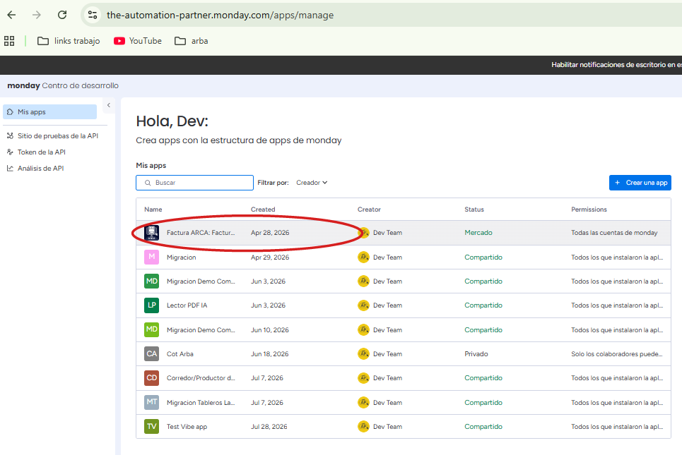
Arriba a la izquierda, debajo del nombre de la app, click en "+ Versión nueva".
Se crea la siguiente (v41, v42…) con estado Borrador, y queda seleccionada como Activo. No toques el botón azul "Publicar" — eso la mandaría a producción.
La versión que está En vivo aparece como "bloqueada para cambios": no se le pueden editar las URLs. Por eso el flujo empieza creando una.
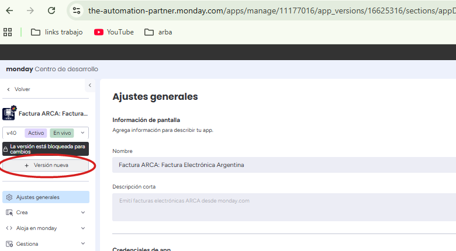
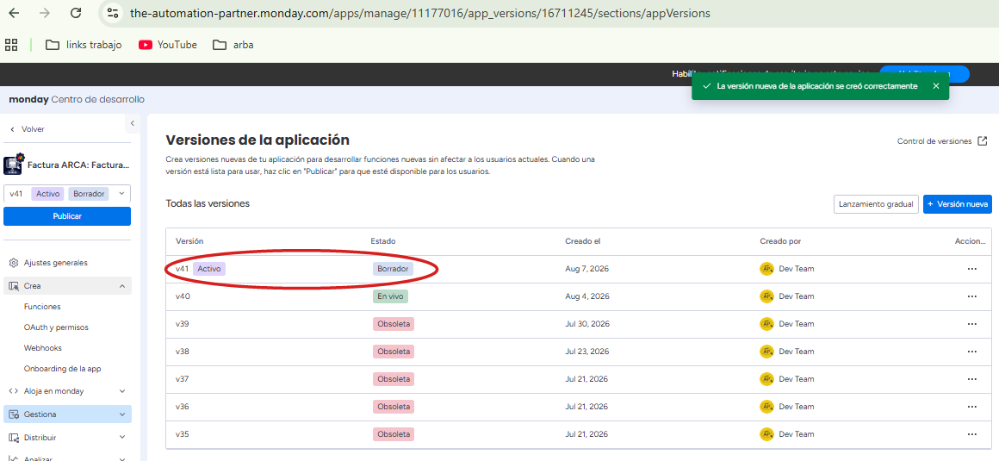
En el menú de la izquierda: Crea → Funciones. De las 5 funciones de la lista,
hay que tocar dos. En las dos se cambia arca. por
staging. y nada más.
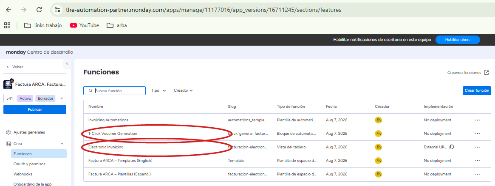
| Función | Campo | Qué poner |
|---|---|---|
| 1-Click Voucher Generation Bloque de automatización |
Configuración de API → URL de ejecución |
https://staging.theautomationpartner.com/api/comprobantes/emit |
| Electronic Invoicing Vista del tablero |
Deployment → Establecer la URL que se va a mostrar |
https://staging.theautomationpartner.com |
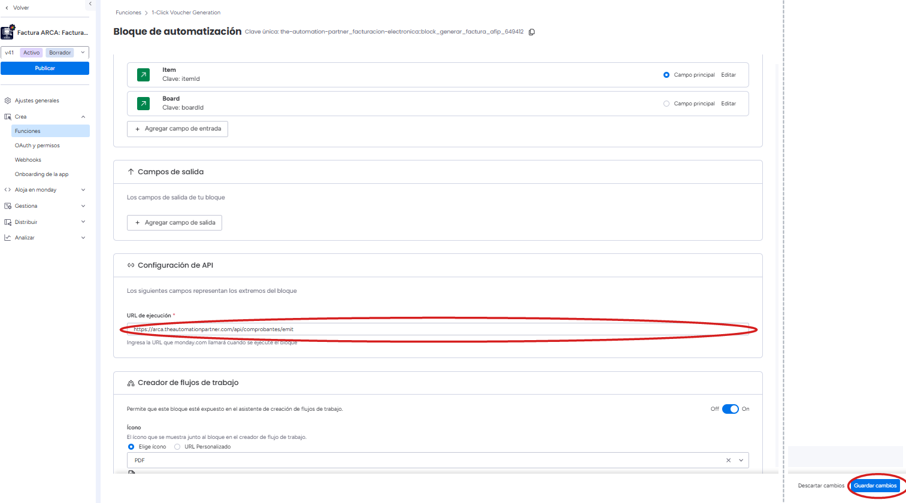
arca. — o sea, producción. Hay que dejarla en staging. y darle
Guardar cambios (el otro círculo). La línea punteada es un pedazo de pantalla
vacío que se sacó para que se lea.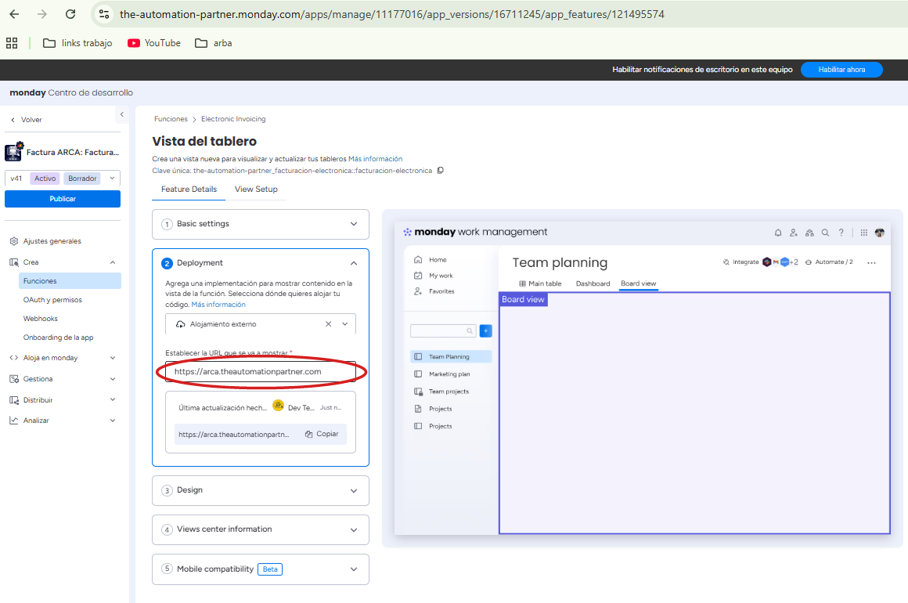
1-Click Voucher Generation es la que se llama al emitir: si no la cambiás, la factura sigue saliendo por producción aunque la vista apunte a staging.
En cada función, después de editar, "Guardar cambios" abajo a la derecha.
Guardá la Draft sin promoverla a Live. Como TAP es dueña de la app, monday aplica sola la Draft más reciente al abrir la app en cualquier tablero de la cuenta.
Probá en el tablero de pruebas, que además tiene certificado de homologación.
Cuando el arreglo está probado, se mergea a main (paso 5 de la sección
siguiente) y se borra la Draft.
Gestiona → Versiones de la aplicación → en la fila de la versión Borrador, el menú "…" de la derecha → Eliminar versión.
En el mismo menú está "Publicar", que pone esa versión En vivo — con las URLs apuntando a staging, para todos los clientes. La opción es "Eliminar versión".
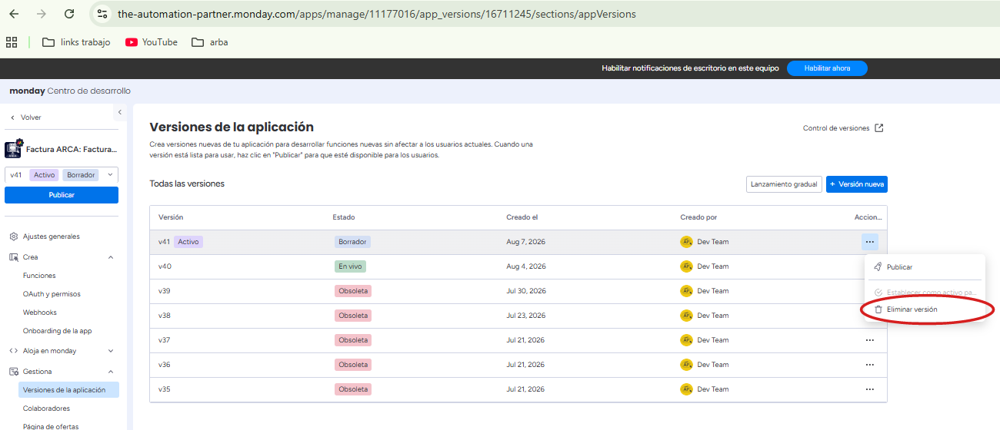
Una vez que el código está en producción, la versión Live ya sirve el código nuevo
—porque su URL apunta a arca., que es donde se acaba de deployar. La Draft
ya no aporta nada.
Para reconocer un problema hay que saber cómo se ve lo normal. Todas las noches a las 3 AM el sistema audita contra AFIP lo que emitió, y manda esto al canal:
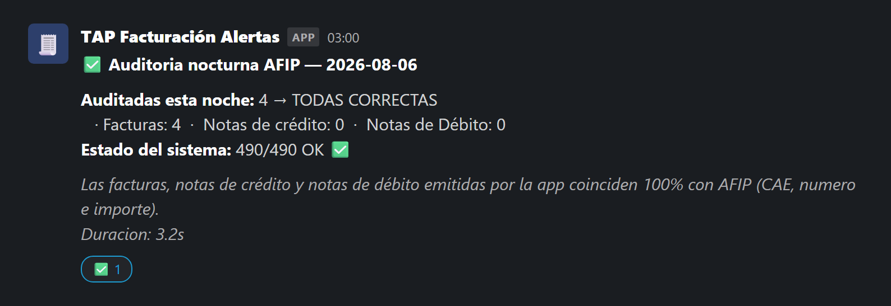
Es que llegue. Sale todas las noches aunque no haya habido nada que auditar —en ese caso dice "Auditadas esta noche: 0"— justamente para que el silencio signifique una sola cosa.
Si una mañana no está, algo dejó de funcionar, y eso hay que mirarlo aunque ningún cliente se haya quejado todavía. Es la única señal de vida diaria que tiene el sistema.
Las alertas llegan al canal de Slack #make-errores-, donde están todos los
devs.
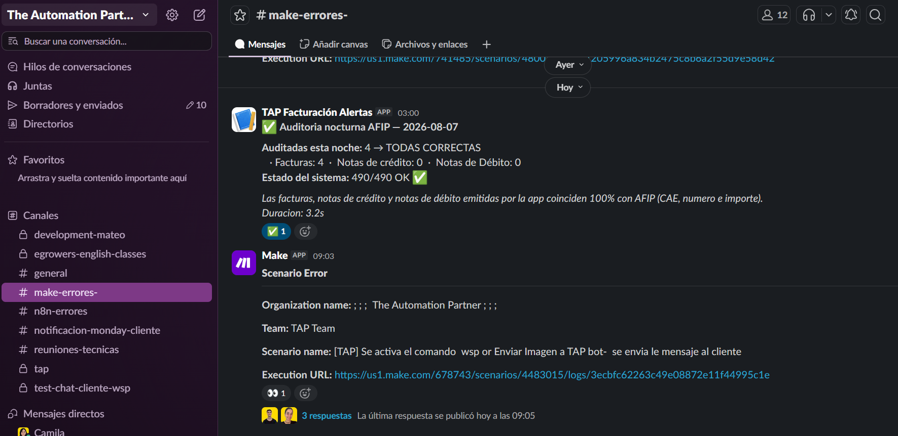
| Lo que ves | Qué es | ¿Hacés algo? |
|---|---|---|
| ✅ Auditoria nocturna AFIP | La señal de vida diaria, a las 3 AM | No. Que NO llegue sí es un problema |
| 🚨 Error sistema en facturación | Un mismo título tapa 6 cosas distintas | Leé la línea Error: ↓ |
| 🚨 DISCREPANCIA AFIP | lo nuestro no coincide con AFIP | Sí, el mismo día → ficha C |
| 🟡 Conciliación AFIP | AFIP tiene comprobantes que nosotros no | Preguntar, no arreglar |
El título rojo "Error sistema en facturación" no dice nada por sí solo: tapa
seis incidentes con acciones opuestas — uno es "esperá" y otro es "pará todo, esto es
plata". Hay que abrir la línea que empieza con Error: y buscarla acá:
Si Error: empieza con… | Es | Gravedad |
|---|---|---|
[RECOVERY_MISMATCH] | Ficha A — la factura no se emitió, y no se reintenta más | ALTA |
[ABANDONED] | Ficha B — reservó número y AFIP dice que no existe | ALTA |
Esta es la instancia de PRUEBA | un cliente real cayó en staging y está esperando | ALTA |
503 · ETIMEDOUT · ECONNRESET | Ficha D — se cayó AFIP. No es nuestro | MEDIA |
[FASE2_MISMATCH] | la factura sí tiene CAE. Informativo | BAJA |
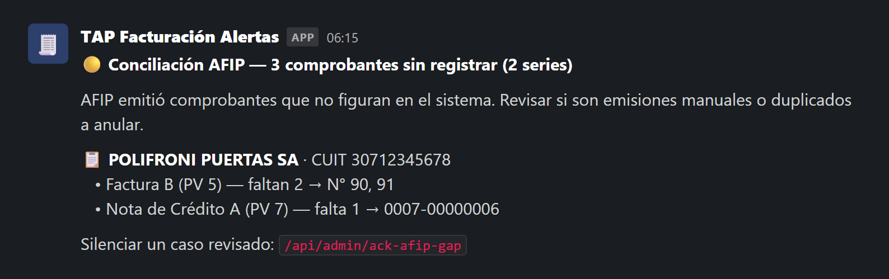
Las rojas aparecen cada varios meses: no se pudo esperar a que pasaran, ni provocarlas
sin romper una emisión real. Están reconstruidas — el texto sale literal de las
plantillas del código, los datos son inventados. Se regeneran con
node documentacion/hacer-capturas-slack.js.
Cada una se lee en 20 segundos. La línea roja es la que importa: es lo que no tiene vuelta atrás.
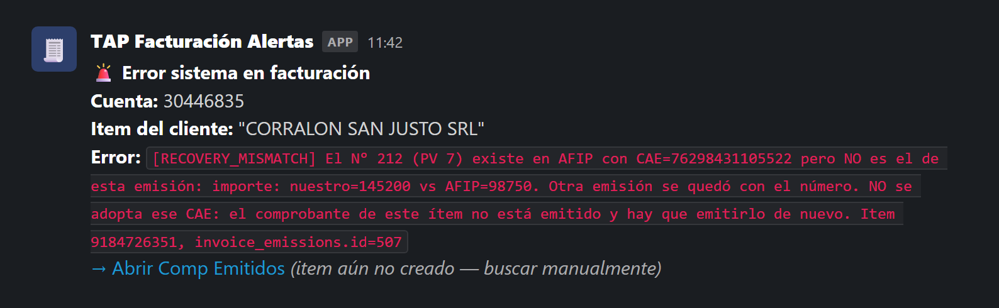
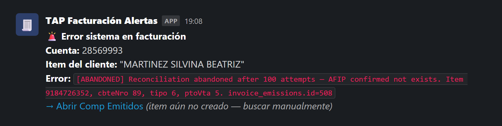
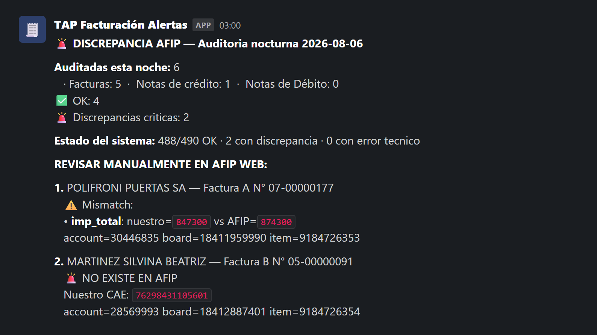
FEDummy, que no pide autenticación: si AppServer, DbServer o AuthServer no dicen OK, es AFIP. Tarda 5 segundos.UPDATE. Cualquiera de las tres puede generar dos CAE para una sola venta, y eso solo se corrige con una nota de crédito.Ejemplo real: hay que corregir un mensaje de error que quedó confuso.
Nunca se pushea directo a main. Ahí están los clientes reales
facturando. Todo pasa primero por develop y por staging.
git checkout develop
git pull origin developcd backend-repo
npm testCinco bancos de prueba, menos de un segundo. No necesita AFIP, ni monday, ni base
de datos. Si cambiaste un mensaje a propósito, refrescá el corpus con
node test/mensajes.test.js --actualizar.
git add .
git commit -m "fix: descripción del cambio"
git push origin developGitHub Actions corre los tests y deploya a staging solo. Si un test falla, el deploy se frena y no llega a ningún lado.
Hay un tablero hecho para esto: Facturación con errores de test, con 12 ítems cargados con datos mal a propósito, uno por cada error.
Cambiá la columna de estado a "Crear Comprobante" y leé el comentario que deja la app.
Por defecto ese tablero pega contra producción: lo que lo hace seguro no es el entorno, es su certificado de homologación. Si además querés que corra el código nuevo, hay que crear la versión Draft — el paso a paso está en la sección 3.
git checkout main
git merge develop --ff-only
git push origin mainEn unos 2 minutos está arriba y los clientes lo ven.
Ya pasó dos veces que el deploy terminó bien y el código nunca llegó al servidor.
ssh root@134.122.5.114 "cd /opt/apps/App-monday && git log --oneline -1"Ese commit tiene que ser el tuyo. Si no coincide, el deploy falló aunque diga OK. La
causa más común: alguien dejó un archivo suelto en el servidor y el
git pull se niega a pisarlo.
git checkout main && git revert HEAD && git push origin mainNo hace falta entender el bug para revertir. Revertí primero, investigá después.
Nunca git reset --hard con --force, y nunca
edites archivos directo en el servidor: el próximo deploy falla y rompe todos los
siguientes.
| Quién | Decide sobre |
|---|---|
| Pamela (contadora) | Todo lo fiscal: emitir una nota de crédito, re-emitir algo dudoso, hablar con un cliente, cualquier cosa que cambie un importe, un CAE o un número de comprobante |
| Martín (líder técnico) | Lo técnico. Y es el único con acceso a DigitalOcean y Cloudflare |
| Cualquier dev | Reiniciar, leer logs, revertir un deploy, consultas de solo lectura |
main solo van reverts y arreglos urgentes. Ninguna feature.| Qué | Quién lo tiene |
|---|---|
| SSH al servidor | cada dev con su propia clave |
| Centro de Desarrollo de monday | todos, con la cuenta de dev |
Slack #make-errores- | todos los devs |
| Panel de DigitalOcean | solo Martín |
| Cloudflare | solo Martín |
| Clave fiscal de AFIP | nadie de nosotros — la tiene cada cliente |
Si el servidor no responde ni por SSH, hay que llamar a Martín. Es el único que puede entrar por la consola de DigitalOcean.
Nunca vamos a poder entrar a AFIP por un cliente. Cuando algo dice "verificar en AFIP web", eso lo hace el cliente, o Pamela con él.
ssh root@134.122.5.114 # entrar al servidor
pm2 list # ¿está vivo?
pm2 logs tap-monday --lines 100 # ¿qué está pasando?
pm2 reload tap-monday --update-env # reiniciar suave
curl -s https://arca.theautomationpartner.com/api/healthpm2 list — online, sin restarts nuevos.[reconcile-cron] en los
logs: tiene que ser de hace minutos, no de hace horas.processing de más de una hora.El detalle completo —12 fichas de incidentes con comandos, entrando por el síntoma— está en RUNBOOK.md, en la raíz del repositorio. Este documento es el panorama; el runbook es la herramienta cuando ya hay un problema.